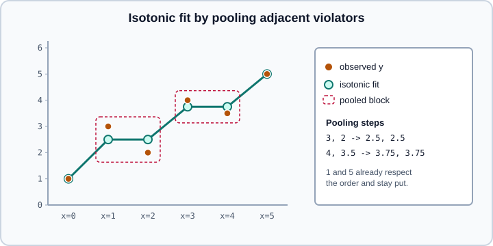

Isotonic Regression
|
This content was generated with the assistance of AI and should be verified against the official documentation before being relied on in production. |
This page covers sklearn.isotonic, the scikit-learn tools for fitting a monotonic function to one-dimensional data. The page does not depend on PyTorch or TensorFlow. Examples were run on Python 3.13 with scikit-learn 1.9.1, NumPy 2.5.4 and SciPy 1.18.1 on 2026-10-31.
Isotonic regression is the usual non-parametric way to fix the output of a score that is known to be monotonically related to the target. Its best known use in scikit-learn is the method="isotonic" option of CalibratedClassifierCV, which is explained in Probability Calibration (reliability diagrams, FrozenEstimator workflows and the choice between sigmoid, isotonic and temperature scaling); this page explains the model underneath, which you can also use directly.
The model
Given pairs \((x_i, y_i)\) with weights \(w_i\), isotonic regression finds fitted values \(\hat{y}_i\) that solve
\[ \min_{\hat{y}} \sum_i w_i \,(y_i - \hat{y}_i)^2 \quad \text{subject to} \quad \hat{y}_i \le \hat{y}_j \text{ whenever } x_i \le x_j . \]
There is no functional form and no hyperparameter that controls smoothness: the only assumption is that the response never decreases (or never increases) as \(x\) grows. The solution is found by the pool adjacent violators algorithm (PAVA): scan the points in order of \(x\), and whenever two neighbouring fitted values break the ordering, replace both by their weighted average and keep merging backwards until the ordering holds. The result is a staircase of flat blocks, and scikit-learn predicts by linear interpolation between the block boundaries.

The functional interface
isotonic_regression(y, *, sample_weight=None, y_min=None, y_max=None, increasing=True) takes only the response values, assumed to be already sorted by the predictor, and returns the fitted values. It is the right tool when the ordering is given by position (for example a ranked list).
import numpy as np
from sklearn.isotonic import isotonic_regression
y = np.array([1.0, 3.0, 2.0, 4.0, 3.5, 5.0])
print(isotonic_regression(y))
print(isotonic_regression(y, y_max=4.0))
w = np.array([1, 1, 5, 1, 1, 1.0])
print(isotonic_regression(y, sample_weight=w))[1. 2.5 2.5 3.75 3.75 5. ]
[1. 2.5 2.5 3.75 3.75 4. ]
[1. 2.16666667 2.16666667 3.75 3.75 5. ]The first line is the staircase drawn in the figure. In the second, y_max clips the top of the fit. In the third, a weight of 5 on the third point pulls the pooled block towards its value: the pool becomes the weighted mean \((3 \cdot 1 + 2 \cdot 5) / 6 \approx 2.17\) instead of 2.5.
IsotonicRegression
IsotonicRegression is the estimator version. It sorts the data for you, accepts repeated values of \(x\), and supports predict and transform at new points.
| Parameter | Meaning |
|---|---|
|
Optional lower and upper bounds for the fitted values (for probabilities use 0 and 1) |
|
|
|
What to do for inputs outside the training range: |
The fitted attributes are X_min_ and X_max_ (the training range), X_thresholds_ and y_thresholds_ (the breakpoints of the piecewise-linear function, with repeated flat values removed) and increasing_ (the resolved direction when increasing="auto"). The helper check_increasing(x, y) returns the boolean that the auto option relies on.
import numpy as np
from sklearn.isotonic import IsotonicRegression, check_increasing
rng = np.random.RandomState(0)
n = 100
x = np.arange(n)
y = rng.randint(-50, 50, size=(n,)) + 50.0 * np.log1p(np.arange(n))
iso = IsotonicRegression(out_of_bounds="clip").fit(x, y)
print(iso.increasing_, iso.X_min_, iso.X_max_, len(iso.X_thresholds_), len(iso.y_thresholds_))
print(iso.predict([-10, 0, 50.5, 99, 500]).round(2))
print(check_increasing(x, -y), check_increasing(x, y))
print(IsotonicRegression(increasing="auto").fit(x, -y).increasing_)
for ob in ("nan", "clip", "raise"):
m = IsotonicRegression(out_of_bounds=ob).fit(x, y)
try:
print(ob, m.predict([-5, 120]))
except ValueError as e:
print(ob, "ValueError:", str(e)[:60])True 0.0 99.0 36 36
[ -6. -6. 183.5 246.51 246.51]
False True
False
nan [nan nan]
clip [ -6. 246.5072509]
raise ValueError: A value (-5.0) in x_new is below the interpolation range's mOne hundred noisy points are summarised by 36 breakpoints. Inputs of -10 and 500 are clipped to the values at the ends because of out_of_bounds="clip", and the default "nan" would have returned NaN for them. If you do not know whether the relation is increasing or decreasing, increasing="auto" decides from the data, but a clearly wrong guess on a weak or noisy relation silently flips the whole fit, so set the direction explicitly whenever you know it.
Input shape
IsotonicRegression follows the scikit-learn conventions loosely: X is a one-dimensional array, or a two-dimensional array with a single column, so it can sit inside a Pipeline or ColumnTransformer step. With more than one feature, fit raises a ValueError saying that the input should be a 1d array or a 2d array with one feature. The estimator is a transformer as well as a regressor: transform is the same function as predict, which is what makes it usable as a score-to-probability stage. To use several features, fit a monotone model on a single combined score, as in the next section; for models that are monotone in each of many features see the monotonic constraints of gradient boosting.
Calibrating a score by hand
The calibration use case needs a held-out set that the underlying model has not seen, because the scores on its own training data are over-confident. The example below fits a random forest on one slice of the data, learns the isotonic map on a second slice, and measures the Brier score on a third.
import numpy as np
from sklearn.datasets import make_classification
from sklearn.ensemble import RandomForestClassifier
from sklearn.isotonic import IsotonicRegression
from sklearn.metrics import brier_score_loss
from sklearn.model_selection import train_test_split
X, y = make_classification(n_samples=6000, n_features=20, n_informative=4, random_state=0)
X_fit, X_rest, y_fit, y_rest = train_test_split(X, y, train_size=1000, random_state=0)
X_cal, X_test, y_cal, y_test = train_test_split(X_rest, y_rest, train_size=2000, random_state=0)
rf = RandomForestClassifier(n_estimators=100, random_state=0).fit(X_fit, y_fit)
s_cal = rf.predict_proba(X_cal)[:, 1]
s_test = rf.predict_proba(X_test)[:, 1]
iso = IsotonicRegression(y_min=0.0, y_max=1.0, out_of_bounds="clip").fit(s_cal, y_cal)
p_test = iso.predict(s_test)
print("brier raw :", round(brier_score_loss(y_test, s_test), 4))
print("brier isotonic:", round(brier_score_loss(y_test, p_test), 4))
print("steps:", len(iso.X_thresholds_), "distinct outputs:", len(np.unique(p_test)))
print("monotone in score:", bool(np.all(np.diff(iso.predict(np.sort(s_test))) >= 0)))brier raw : 0.097
brier isotonic: 0.0888
steps: 49 distinct outputs: 28
monotone in score: TrueThe Brier score improves with 2000 calibration rows, and the 49 breakpoints collapse the forest’s scores onto 28 distinct probabilities. In real projects prefer CalibratedClassifierCV, which does the splitting or cross-validation for you and handles multiclass problems by calibrating one-vs-rest and renormalising; the manual form is for understanding and for custom scores that are not classifier outputs, for example a risk score from another system.
Pitfalls
-
It overfits small samples. The staircase has as many degrees of freedom as there are blocks. The calibration guide recommends isotonic over the sigmoid only with a large calibration set (roughly more than 1000 samples); with a hundred rows it can be worse than no correction.
-
It creates ties. Flat blocks give many samples the same output, so ranking metrics such as ROC AUC can fall slightly after isotonic calibration. A strictly increasing correction such as the sigmoid preserves the ranking.
-
It cannot extrapolate. Outside the training range the function is undefined, so choose
out_of_boundson purpose."clip"is the usual choice for probabilities and"nan"makes missing coverage visible. -
Fit the correction on data the model has not seen. Fitting on the model’s own training scores teaches the map to trust over-confident outputs.
-
The result is not smooth. The prediction is piecewise linear with kinks at every block boundary; if a smooth monotone curve is required, fit a parametric or spline-based model instead.
-
It is one-dimensional. Monotonicity in several variables needs a model with monotonic constraints, not
IsotonicRegression.
Older material
Old tutorials sometimes build calibration around a hand-rolled isotonic fit or around the prefit mode of the calibration wrapper. Code that passes CalibratedClassifierCV(cv="prefit") has been replaced by FrozenEstimator; see FrozenEstimator.
See also
-
Probability Calibration for
CalibratedClassifierCVand the comparison with the sigmoid method. -
Metrics & Scoring for the Brier score and log loss.
-
scikit-learn for machine learning for the other pages of this part.